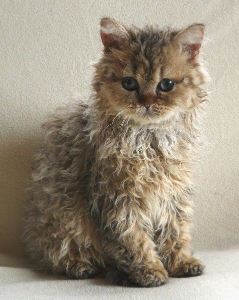
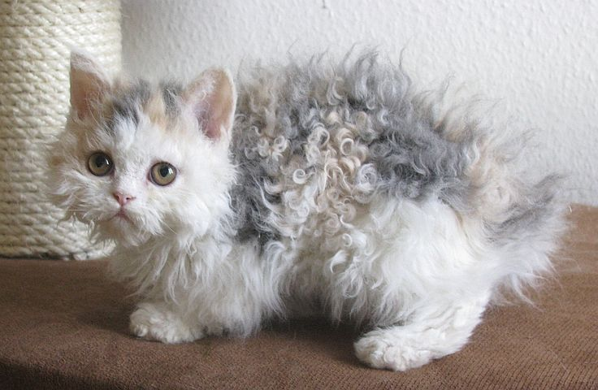
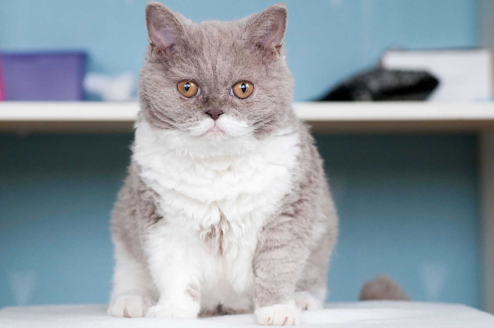
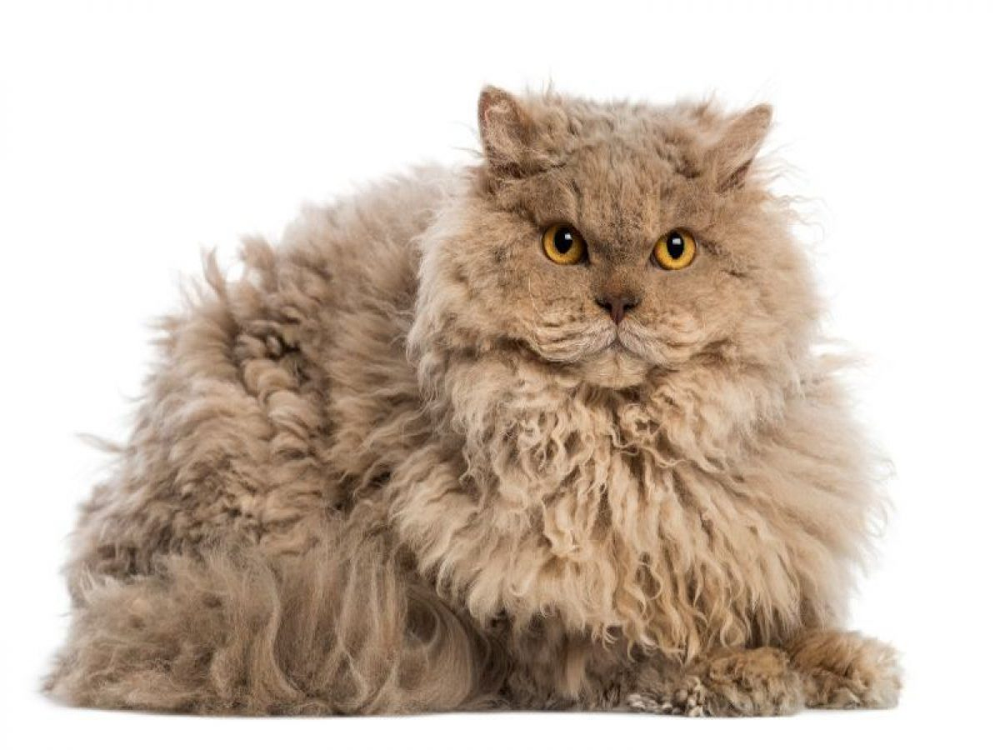
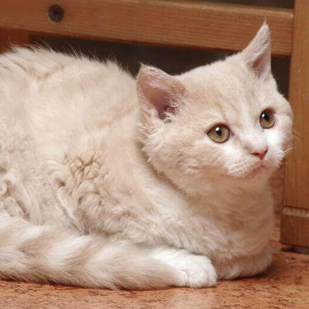

|
SELKIRK REX
|
||
Origen |
Personalidad |
Aspecto |
| País de origen: EE. UU. Otros nombres: Gato oveja El selkirk rex recibe su nombre de las montañas Selkirk (en Wyoming, EE. UU.), por ser allí donde apareció el primero en una camada nacida en un refugio de animales en 1987. Este gatito tenía un pelaje anormalmente rizado. Un programa de reproducción experimental con este gato y su prole descubrió que la mutación de pelo rizado era un rasgo dominante: la mitad de los gatitos tenían un pelaje rizado. El rasgo es recesivo en otras razas rex. El selkirk rex es muy popular en EE. UU. y Canadá, donde su llamativo pelaje tupido y rizado le ha valido el apodo de < gato oveja >. |
El selkirk rex tiene una personalidad atenta y activa con un carácter dulce y entrañable.
Este gato tranquilo disfruta sentándose en tu regazo y le encanta que lo abracen.
También le chifla jugar y es un gran compañero para toda la familia.
|
Es un gato de tamaño mediano a grande, con una osamenta fuerte y sólida que le da un
peso sorprendente y un aspecto imponente. Tiene una constitución robusta, el hocico
corto y la cabeza redondeada. El selkirk rex puede ser de pelo corto o pelo largo.
Esta raza puede presentar los tres tipos de pelo posibles (el de guarda, el intermedio
y el profundo) en el pelaje de un gato y los tres son ondulados, lo que proporciona
al pelaje un tacto suave. La ondulación del pelaje varía con la edad, el género,
el clima y la estación. En el selkirk rex de pelo largo, los rizos de la cola son
plumosos y perpendiculares a la cola. El pelo de la gorguera es más largo y
le enmarca la cara. Los selkirk rex pueden presentar todo los colores y patrones de pelaje.
|
 |
|
 |
 |
 |
 |
Nutrición |
Aseo |
Salud |
|
Cada gato es único y tiene sus propias filias, fobias y necesidades particulares
en lo que respecta a la comida. Sin embargo, los gatos son carnívoros
y deben obtener 41 nutrientes diferentes y específicos de los alimentos que ingieren.
La proporción de estos nutrientes variará según la edad, el estilo de vida y la
salud en general, por lo que no sorprende que un gatito enérgico y en crecimiento
necesite un equilibrio de nutrientes diferente en su dieta que un gato sénior menos activo.
Otros aspectos que deben tenerse en cuenta son darle la cantidad adecuada de comida
para mantener el <estado físico ideal> según las pautas de alimentación y atender
las preferencias individuales por lo que respecta a las recetas de comida seca o húmeda.
|
El pelaje del selkirk de pelo largo necesita un cepillado suave a diario para eliminarle
los nudos y enredos. Esto se puede hacer fácilmente con un cepillo de dientes ancho.
La variedad de pelo corto necesita menos cuidados. Un cepillado excesivo aplastará
los rizos de ambas variedades.
|
El selkirk rex puede ser muy longevo. Algunos selkirk rex pueden sufrir pérdida de pelo.
Debido a la introducción de los persas, los selkirk rex registrados en el GCCF del
Reino Unido (el órgano rector para el registro de gatos) se someten a las pruebas
de detección de poliquistosis renal, que afecta principalmente a los persas.
Como sucede con todos los gatos, el selkirk rex necesita vacunaciones, controles
antiparasitarios y chequeos veterinarios periódicos para mantenerlo sano.
|